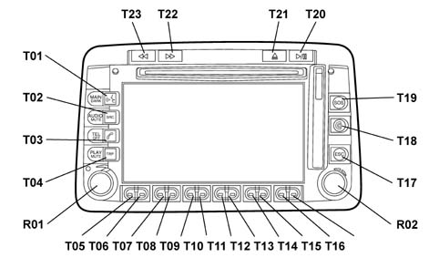
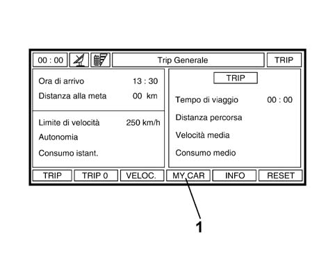
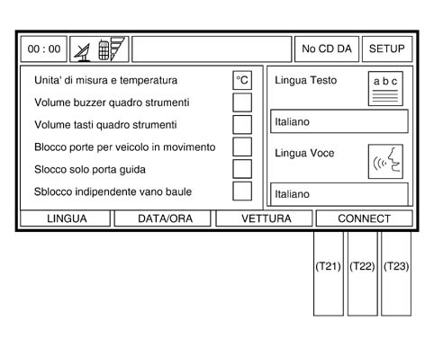
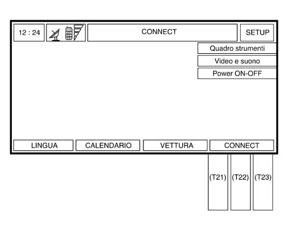
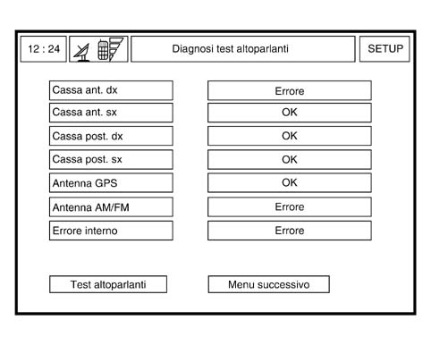
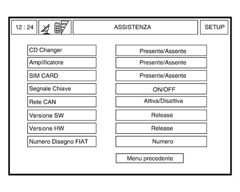
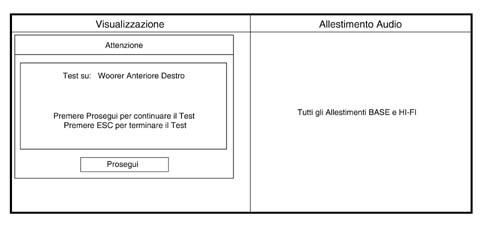

5580PJ CONNECT AUTODIAGNOSTIC PROCEDURE
- Path
- Test > 55 ELECTRICAL EQUIPMENT > 5580 SPECIAL ACCESSORIES > 5580P CONNECT PANEL > 5580PJ CONNECT AUTODIAGNOSTIC PROCEDURE
- Kind
- test / check procedure
- Applies to
- all engines; all production periods
- Interactive page
- https://sloeber94.github.io/elrnDB-fPnd/en/#/169001368
Applies to: all engines; all production periods
- Turn the ignition key to the ON position.
- Press the left knob (R01) to switch the CONNECT on.
- Check that the display comes on.
- Check that all the buttons/knobs (R01 and R02) for the CONNECT in the front panel are lit up.
- Press TRIP button (T04).

- Check that the following screen appears on the display:

1. MY CAR selection
- Press one of the reconfigurable buttons for the MY CAR item to access the Connect SETUP menu.
- Check that the following screen appears on the display:

- Press one of the following three reconfigurable buttons [T21] or [T22] pr [T23] for the CONNECT item to access the Connect STEUP menu.
- Check that the following screen appears on the display:

- Press button [T21] or [T22] pr [T23] for the CONNECT item three consecutive times.
- Press the right knob (R02) and check that the following screen with the item "Assistance" appears on the display:

Assistance Item
- Turn the right knob (R02) to select the item "Assistance" from the menu.
- Press the right knob (R02) to confirm and access the diagnostic data.
- Check that the following screen appears on the display (Fault diagnosis: speaker test):

- The first part of the results of the tests carried out in the autodiagnosis is displayed. The result of the test for each item is indicated (e.g.: OK or ERROR).
- Check the connections for the 4 audio channels for the four items in the list.
- Turn the right knob (R02) to select the "Next menu" item.
- Press the right knob (R02) to confirm, then check that the following screen is shown on the display:

- The second part of the results of the tests carried out in the autodiagnosis is displayed.
- The result of the test is indicated for each item (Present/Absent, Activated/Deactivated or On/Off);
- Check the CD Changer connection, only if it is present in the vehicle trim level.
- Check the HI-FI amplifier connection, only if it is present in the vehicle trim level.
- Check the CAN status for the item in the list.
- Press the right knob (R02), then check that the following screen is shown on the display.
- Turn the right knob (R02) to select the item "Speaker Test" from the menu.
- Press the right knob (R02) to active the guided test at the speakers.
- The activation of the test corresponds to the operation of a single speaker at a time, through the reproduction of a sound at a suitable frequency depending on the type of speaker.
A message is shown on the Connect display at each step (see fig. below) which informs which speaker is activated: audio channel and type.

- Each time the message appears on the Connect display, check that the acoustic signal for the speaker being tested can be heard, then press the right knob (R02) to continue the test (the speaker will remain activated until the operator confirms).
- If faults are detected during the acoustic tests, repair the component/wiring involved.